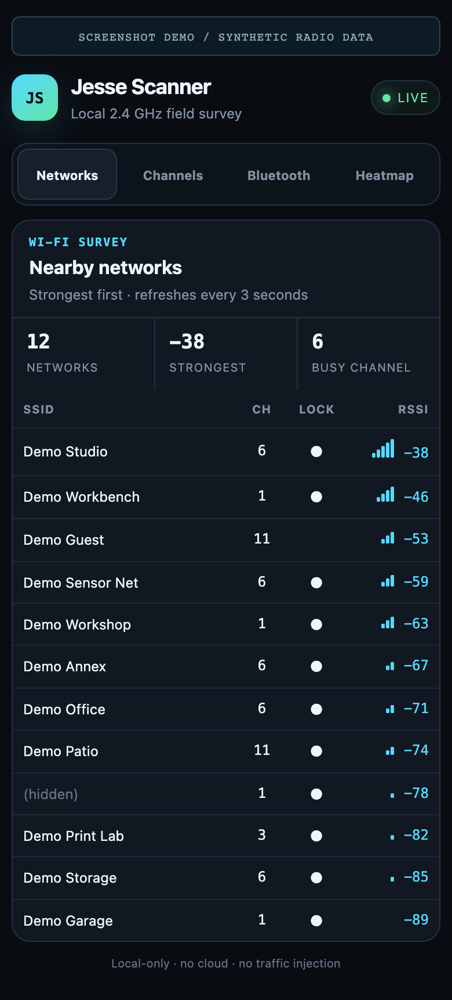

A LOCAL RADIO FIELD TOOL
One board.
Your phone.
A clearer signal.
Survey nearby Wi-Fi, discover BLE devices, and tag signal readings as you walk.
01Wi-Fi surveySSIDs · channel · RSSI
02Channel viewSee where networks cluster
03BLE discoveryOn-demand scan + iBeacon
04Signal logNamed spots · CSV export*

THE CHANNEL VIEWACTUAL UI / DEMO DATA

Actual embedded web UI.
Synthetic data. No private networks shown.
* Export hardening tracked before release.
Synthetic data. No private networks shown.
* Export hardening tracked before release.